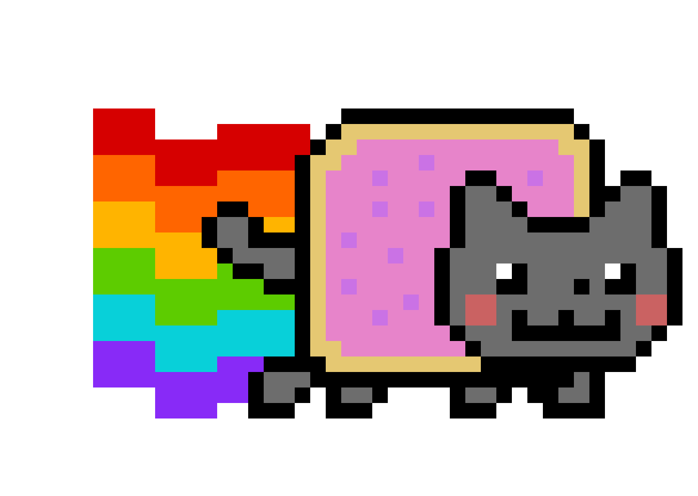
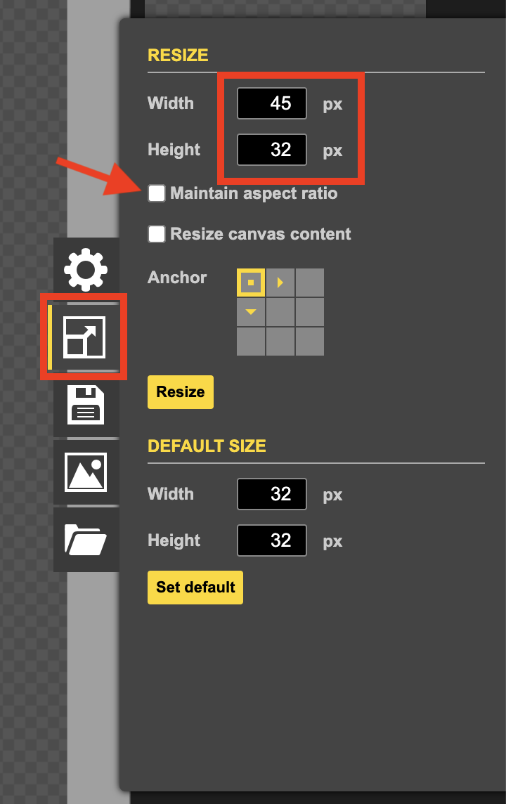
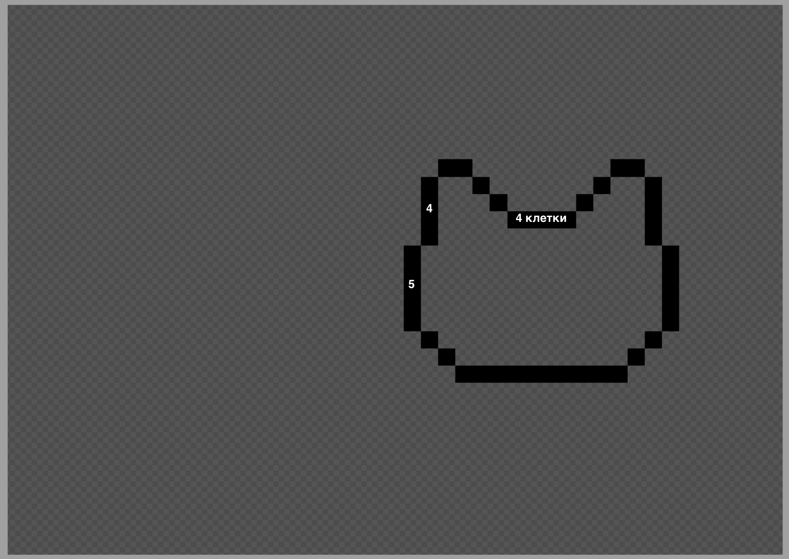
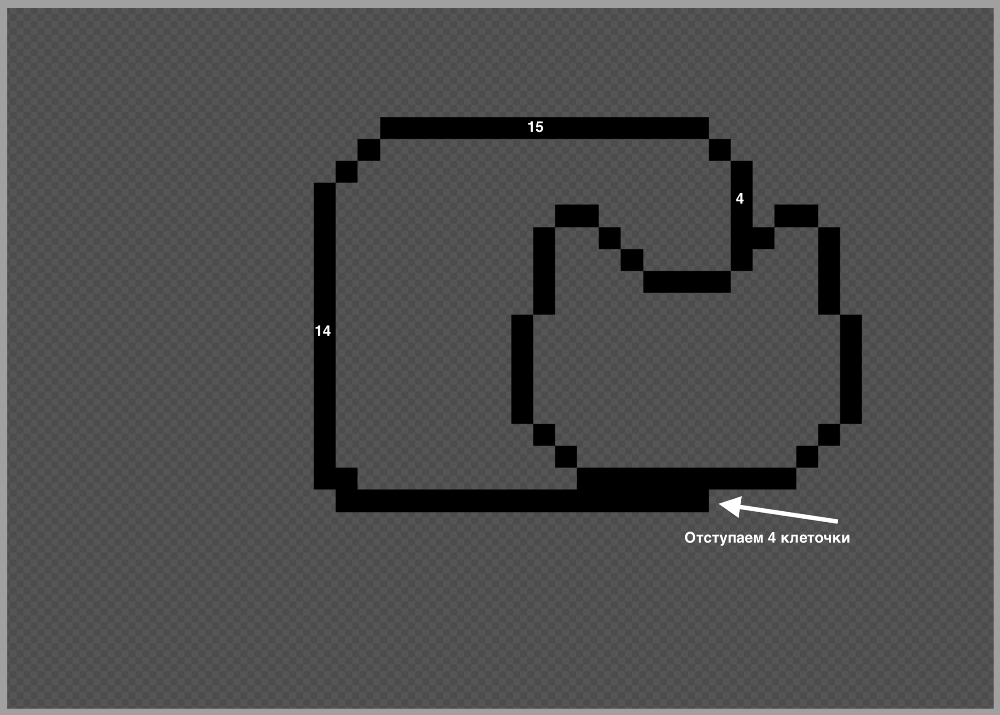
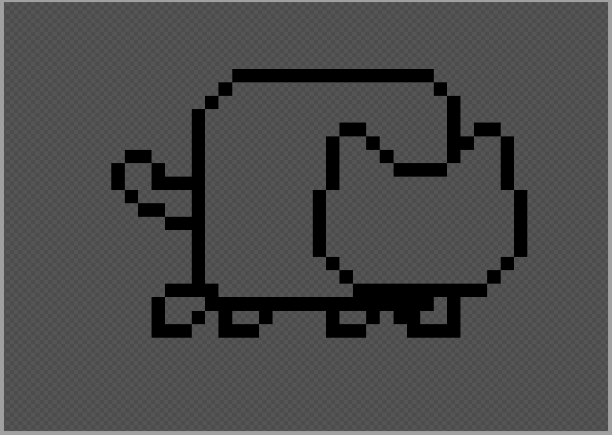
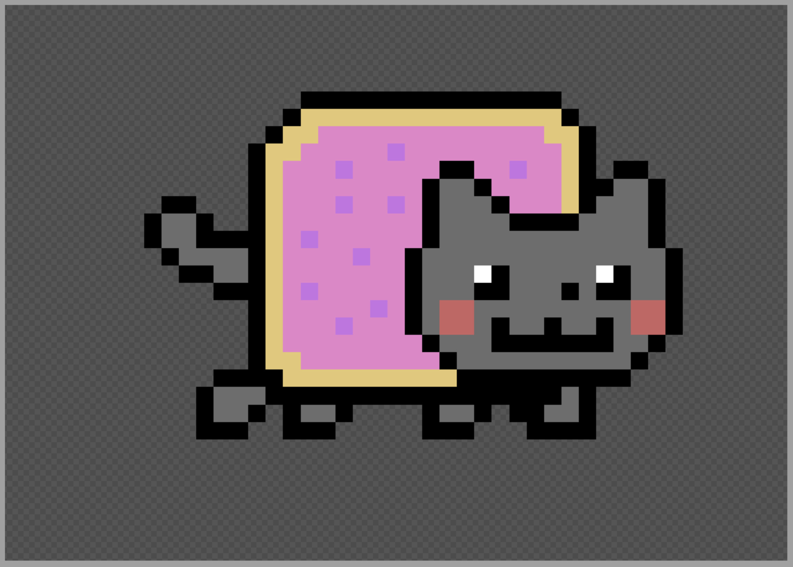
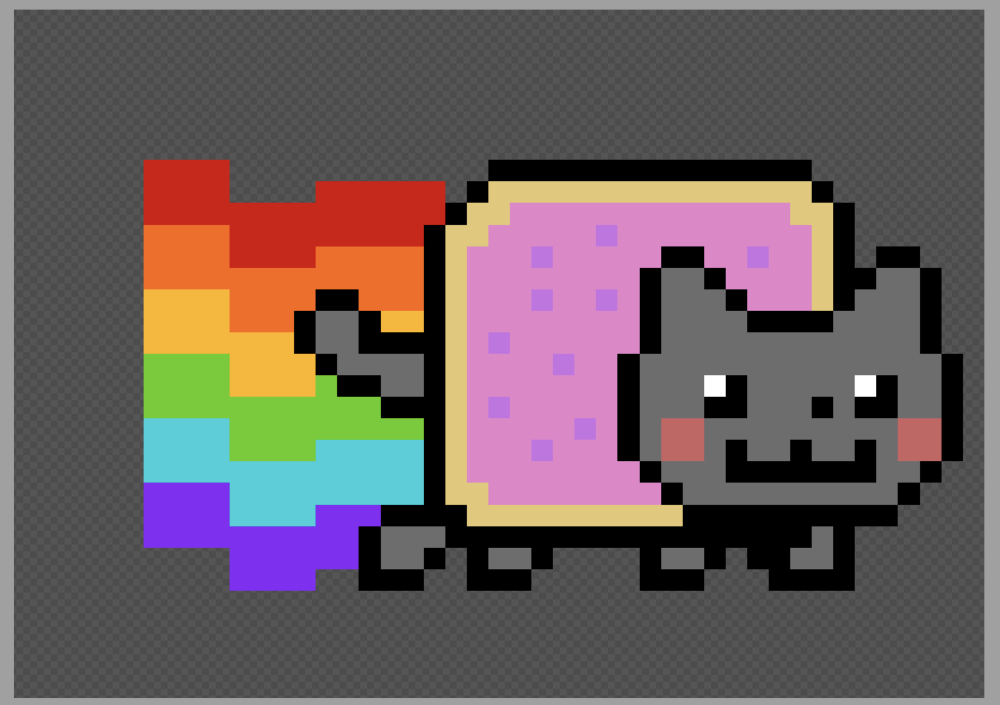
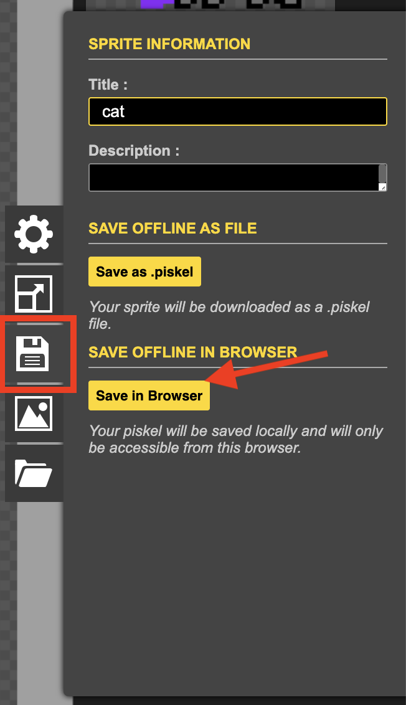
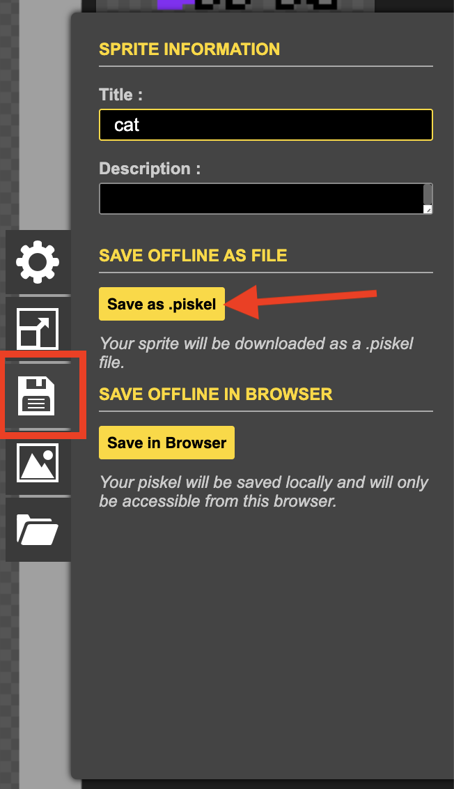

Сегодня мы нарисуем вот такого легендарного котика! 🌌

Установим размер холста 45x32, чтобы котику хватило места.
Построим кота по частям, повторяя за преподавателем.
Сохраним проект в браузере и на компьютер.
На прошлом уроке мы рисовали смайлики.
Каким цветом, например, можно нарисовать РАДОСТЬ?
А какую эмоцию мы можем передать с помощью СИНЕГО цвета?
В Piskel легко случайно закрасить не тот пиксель или промахнуться Заливкой.
Какое сочетание клавиш на клавиатуре нужно нажать, чтобы ОТМЕНИТЬ последнее действие (сделать шаг назад)?
Мы учились рисовать ровное лицо для смайлика.
Какую кнопку на клавиатуре нужно ЗАЖАТЬ и держать, пока мы тянем инструмент "Круг", чтобы он получился идеально ровным?
Делаем холст прямоугольным, чтобы коту хватило места для полета.

Внимательно смотрим на цифры-подсказки!
Рисуем Карандашом:

Добавляем большое туловище прямо за головой.
Рисуем Карандашом:
⚠️ Проверьте, чтобы линии были плотно замкнуты, иначе Заливка выльется за края!

Завершаем каркас нашего персонажа.
Рисуем Карандашом:

Берем Заливку и раскрашиваем нашего героя.

Запускаем двигатель! Тянем линии до левого края.
Рисуем Карандашом:

Сохраняем работу прямо внутри программы Piskel.

Второй шаг — скачать файл-исходник к себе в папку.
⚠️ Скачиваем именно .piskel, а не картинку PNG!

Как прошел сегодняшний урок? Выбери свое настроение!
Кот получился идеальным!
Было интересно рисовать.
Пока путаюсь в пикселях.